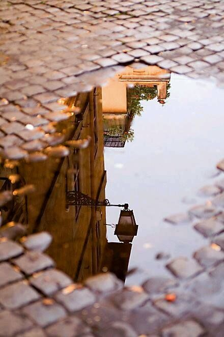
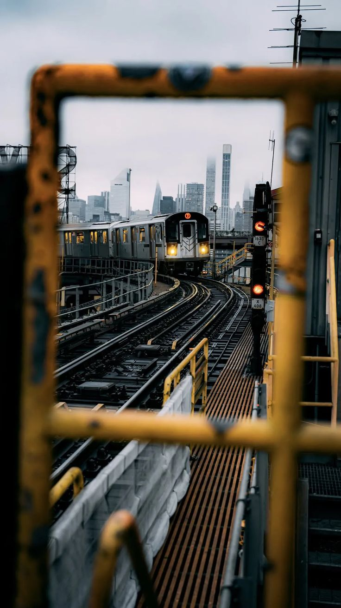

Rise&Run
“Levántate. Muévete. Supera tus límites.”

Nuestra Historia
Rise&Run es una empresa dedicada a la venta de ropa y calzado deportivo, creada con el propósito de ofrecer a las nuevas generaciones productos que combinan estilo, comodidad y rendimiento. Desde sus inicios, la empresa buscó conectar con un público juvenil que considera el deporte no solo como una actividad física, sino también como una forma de expresión, identidad y estilo de vida. Con alrededor de 5 años en el mercado, Rise&Run ha construido su identidad alrededor de las tendencias deportivas y urbanas, ofreciendo prendas y calzado pensados para acompañar a sus clientes tanto durante sus actividades deportivas como en su día a día.

Nuestra Misión
Ofrecer ropa y calzado deportivo de calidad que combine comodidad, estilo y funcionalidad, brindando a nuestro público juvenil productos que les permitan expresar su personalidad y sentirse seguros tanto en sus actividades deportivas como en su vida cotidiana. En Rise&Run buscamos proporcionar una experiencia de compra cercana, moderna y dinámica, manteniéndonos al día con las tendencias de la moda deportiva y las necesidades de nuestros clientes.

Nuestra Visión
Ser una empresa referente en el mercado de ropa y calzado deportivo juvenil, reconocida por nuestra innovación, estilo, calidad y conexión con las nuevas generaciones. A largo plazo, Rise&Run busca ampliar su presencia en el mercado, llegar a más jóvenes y consolidarse como una marca que inspire movimiento, confianza y superación, convirtiéndose en una elección preferida para quienes buscan combinar el deporte con su estilo de vida.